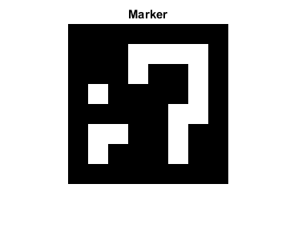

ArUco Marker Image Demo
This example shows how to create an ArUco marker image.
Sources:
Contents
Marker
% params dictionaryId = '6x6_250'; % dictionary id markerId = randi([0 249]); % Marker id in the dictionary borderBits = 1; % Number of bits in marker borders markerSize = 200; % Marker size in pixels
Display
% show marker dictionary = {'Predefined', dictionaryId}; markerImg = cv.drawMarkerAruco(dictionary, markerId, markerSize, ... 'BorderBits',borderBits); imshow(markerImg), title('Marker') % save image imwrite(markerImg, fullfile(tempdir(),'Marker.png'));